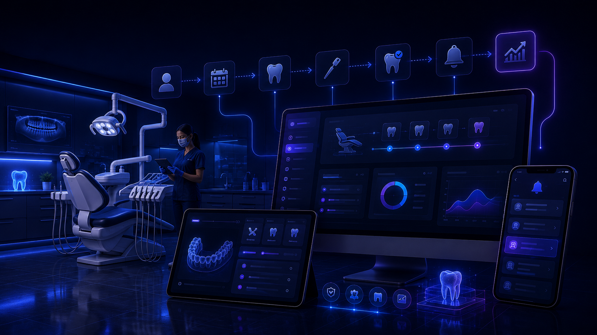

VVZ ERP Suite для администрирования стоматологической практики.
Лёгкий локальный процесс для стоматологических практик, которым нужен приём обращений с сайта, запросов на запись, подтверждений и отмен без обработки клинических данных.

Типовые административные заявки
Конфигурация настраивается под публичные формы практики, работу администратора и правила административного контроля.
Обращения с сайта
Заявка может включать контакты посетителя, тип административного обращения, предпочтительный способ связи и комментарии для администратора.
Запросы на запись
Заявка может содержать желаемую дату или временное окно, контакты и неклинические заметки, необходимые для планирования.
Подтверждение и отмена
Практика может подтвердить запрос на запись, отменить его или оставить в простом административном статусе для дальнейшего контроля.
От формы до локального журнала
1) Форма на сайте
Посетитель отправляет обращение или запрос на запись только с административной информацией.
2) Серверная очередь
Сервер проверяет заявку и ставит её в очередь доставки стоматологической практике.
3) Локальная программа
Локальная программа получает заявку и сохраняет административную рабочую запись.
4) Уведомление
Авторизованный сотрудник получает уведомление и может подтвердить или отменить административную заявку, если действие включено.
5) Контроль статусов
Заявки используют простые рабочие статусы: новая, подтверждена, выполнена и отменена.
6) Журнал и CSV
Локальный журнал хранит административную запись, а данные можно вручную экспортировать в CSV.
Варианты поставки
Интеграция в существующий сайт
Подключение приёма обращений и запросов на запись к текущему сайту практики после проверки безопасных вариантов.
Готовое решение под ключ
Подготовка сайта, сервера, локальной программы, подключения уведомлений и выбранных административных модулей.
Специальный модуль
Настройка или расширение модуля, если стандартному движку нужно административное дополнение под практику.
Этапы внедрения
Разбор процесса
Разбор реальных форм, правил запросов на запись, статусов и условий установки.
Настройка движка
Настройка готового движка, справочников, модулей и административных рабочих правил.
Тест всей цепочки
Проверка пути от формы сайта до локальной обработки, действия уведомления и экспорта CSV.
Архитектура и контроль данных
Административные данные локально
Административные записи заявок и журнал остаются в локальной программе.
Минимум данных на сервере
Сервер хранит только то, что нужно для доставки и синхронизации заявок.
Адаптер уведомлений
Канал уведомлений служит для разрешённых действий; это не база данных.
Видимость офлайн-состояния
Локальная программа должна показывать состояние связи, последнюю успешную синхронизацию и очередь ожидания.
Восстановление после сбоя
Ожидающие статусы и действия могут продолжиться после восстановления связи.
Модули позже
Новые административные модули можно добавить позже без замены всего движка.
Границы
Эта страница описывает только административную обработку заявок для стоматологических практик. Она не обещает диагностику, медицинские рекомендации, автоматизацию лечения, хранение карт пациентов, хранение медицинской истории, сертифицированное медицинское ПО, регуляторное или медицинское соответствие, обработку чувствительных медицинских данных, поддержку клинических решений, интеграцию с медицинским оборудованием, онлайн-оплату или фиксированные цены и сроки.
Стоимость после разбора процесса
Состав и цена определяются после разбора текущего сайта, административного процесса заявок, нужных модулей и условий установки.